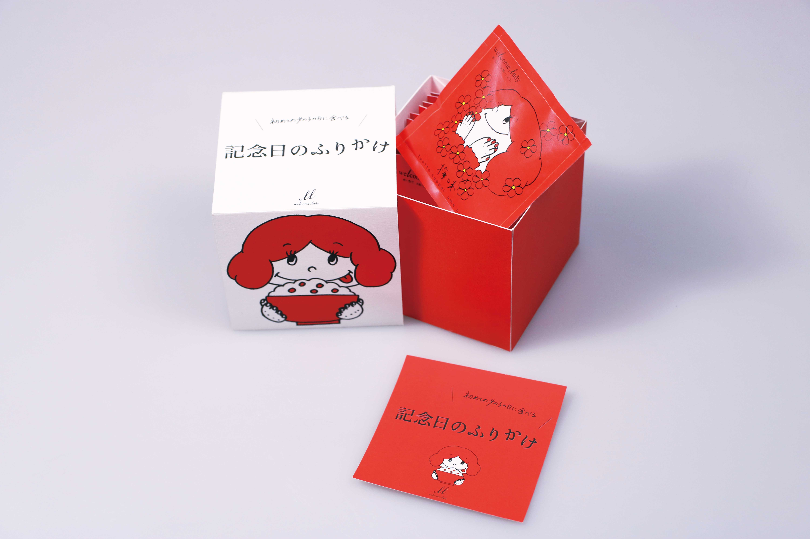
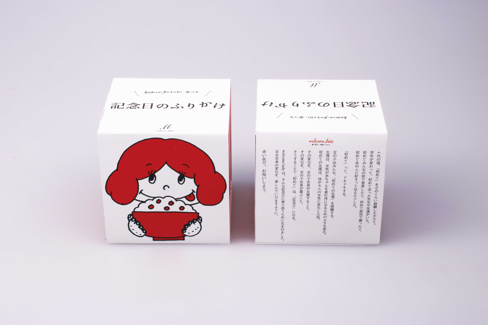
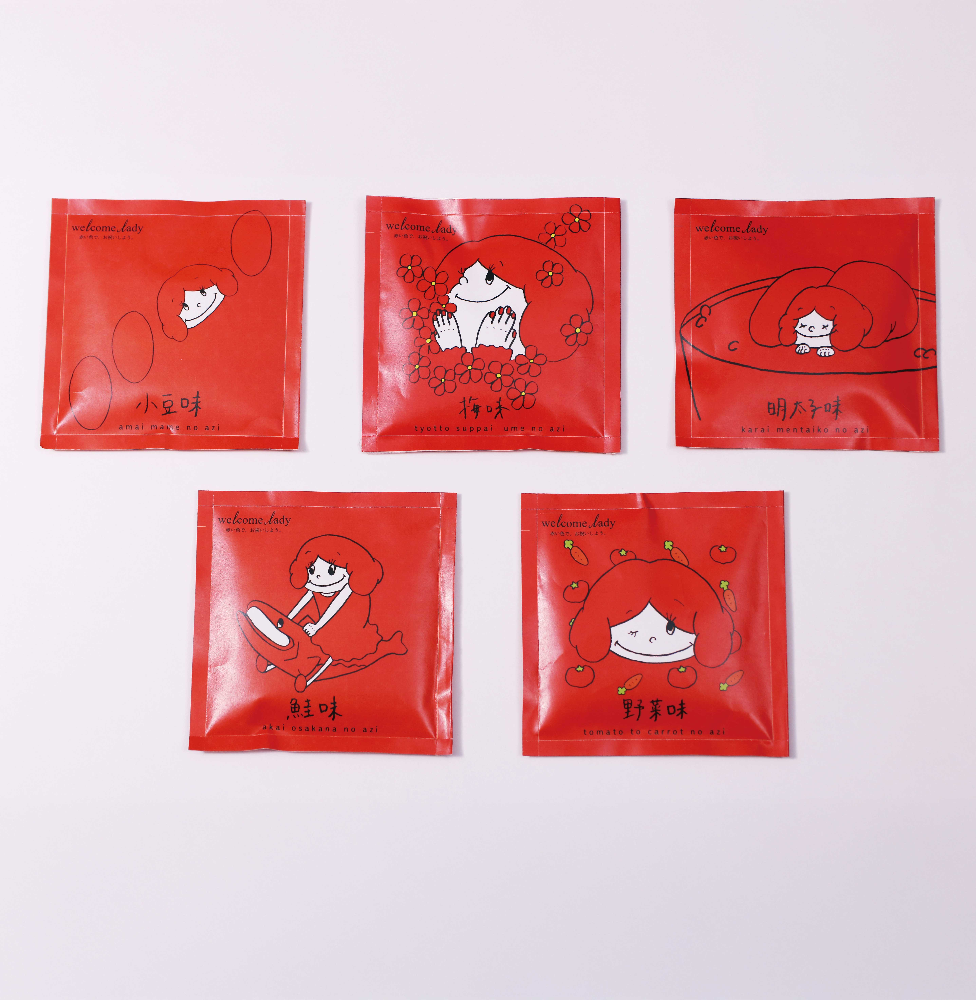
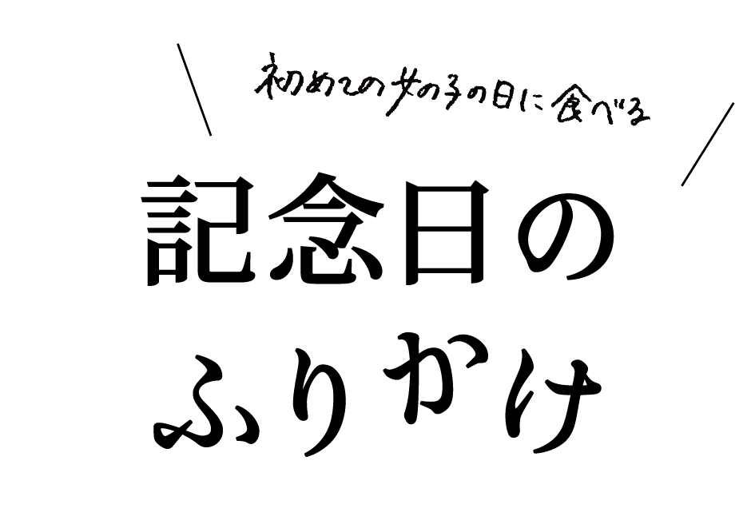
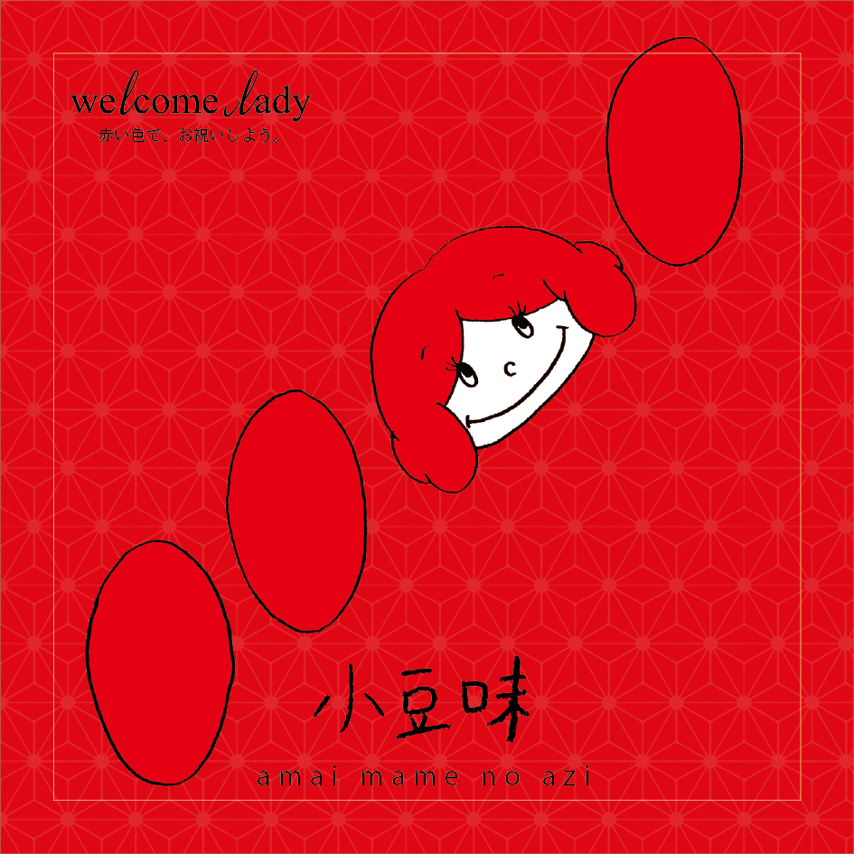
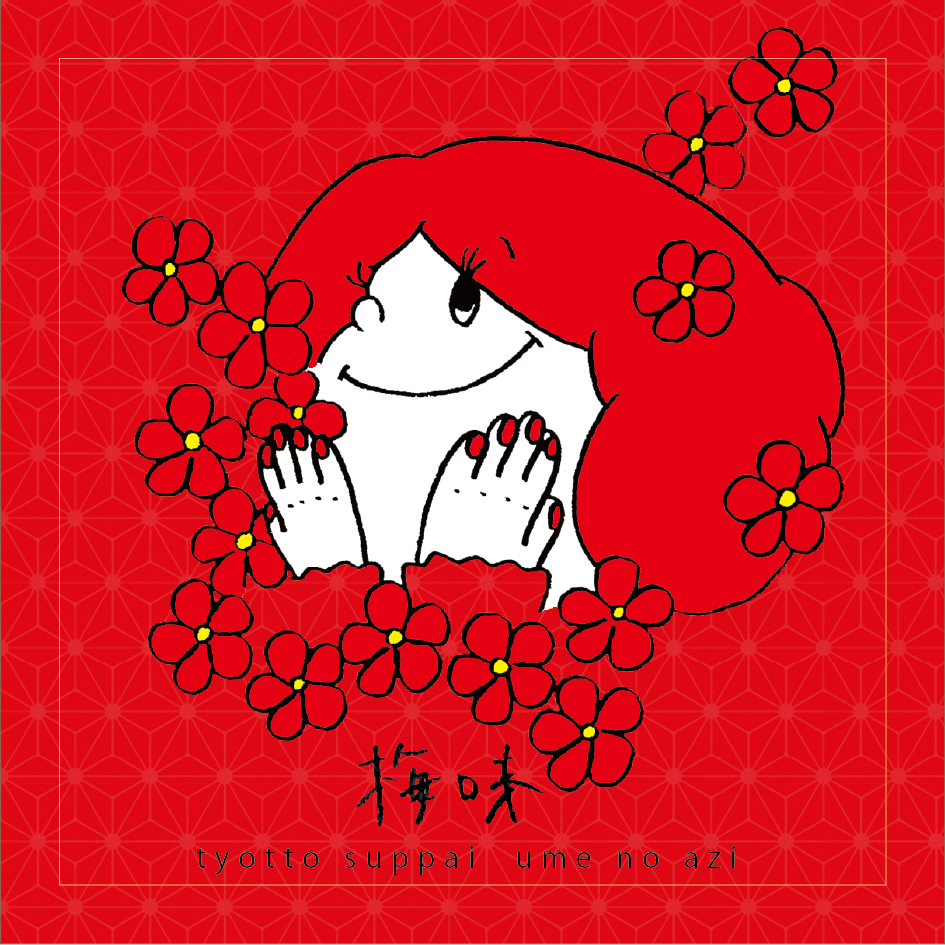
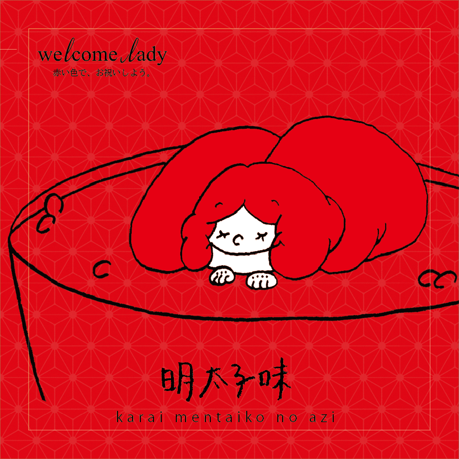
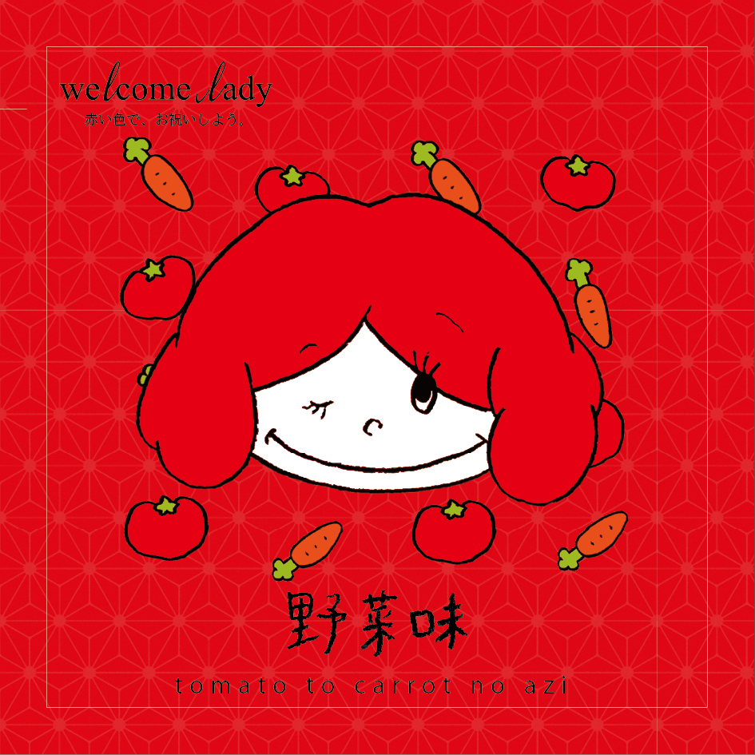

About this Product
記念日のふりかけ



赤い色には、邪気を払う力があると信じられていました。祝いの席でお赤飯を食べる習慣もここに由来します。
「記念日のふりかけ」は、簡単に赤いご飯を作るためのふりかけです。小袋ひとつあたりのふりかけの量は、お茶碗一杯分のお米と混ぜたときにちょうどよく全体が赤く色付くようになっています。

十代の頃、「初めて」をどのくらい経験しただろう。
学年が変わって、初めて会った先生や友達がいた。
初めてみんなの前で発表したり、初めて部活で勝ったり。
初めてあの人に好きって伝えたりした。
「初めて」って、ドキドキする。
女の子はみんな、「初めての生理」を経験する。
生理は、女性が赤ちゃんを産む体になるための大きな変化。
初めての生理は、体が大人の女性に変化した証。
その変化を、女の子自身が自覚すること。
その変化を、女の子自身が喜ぶこと。
そうすることで「初めて」は、「記念日」になる。
welcome ladyは、そんな記念日に寄り添うために生まれました。
自分自身の変化を、楽しんでいけますように。
赤い色で、お祝いしよう。
記念日のふりかけ



赤い色には、邪気を払う力があると信じられていました。祝いの席でお赤飯を食べる習慣もここに由来します。
「記念日のふりかけ」は、簡単に赤いご飯を作るためのふりかけです。小袋ひとつあたりのふりかけの量は、お茶碗一杯分のお米と混ぜたときにちょうどよく全体が赤く色付くようになっています。
ふりかけの種類

小豆の素朴な風味と、ごま塩の塩味が合わさった、ほんのり甘じょっぱい味です。どこか懐かしく、ほっとするような、和の風味が広がります。

梅の上品な酸味がやさしく広がる、さわやかな味わい。甘さ控えめで、後味すっきり。お茶づけにもぴったりです。

明太子のほどよい辛みとコクが調和した、少し大人の味わいです。ピリ辛なのにまろやかで、アクセントが効いたおいしさです。

鮭の香ばしさとほどよい塩味が広がる、やさしくも旨みのある味わい。素材の持ち味を活かした美味しさが広がります。

野菜の自然な甘みとやわらかな塩気が広がる、素朴でやさしい味わい。からだにやさしい、毎日食べたくなるひと口です。